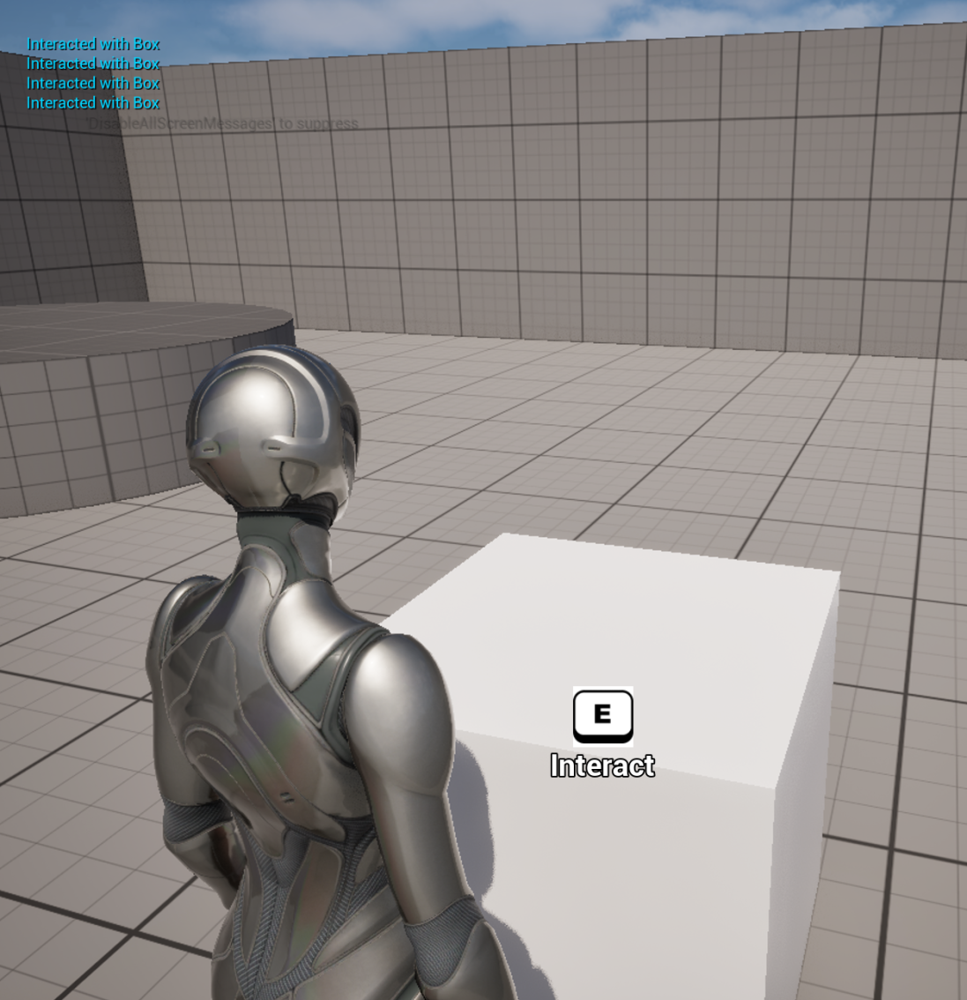
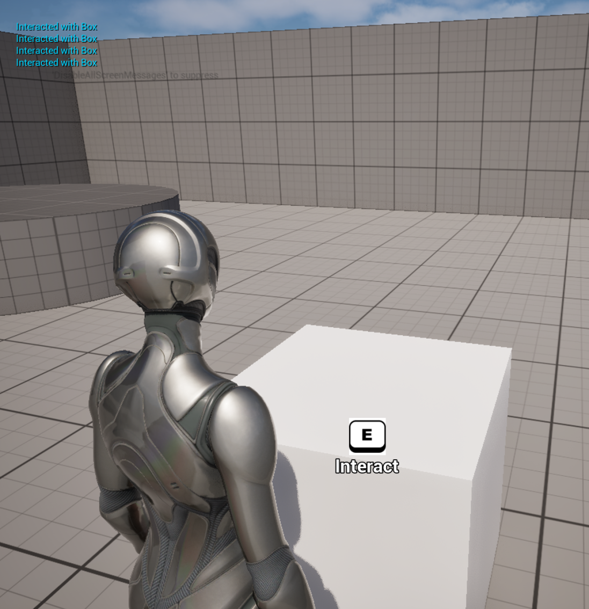
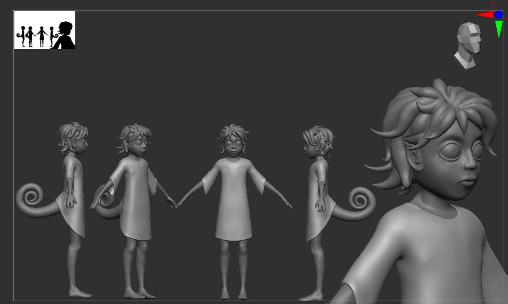
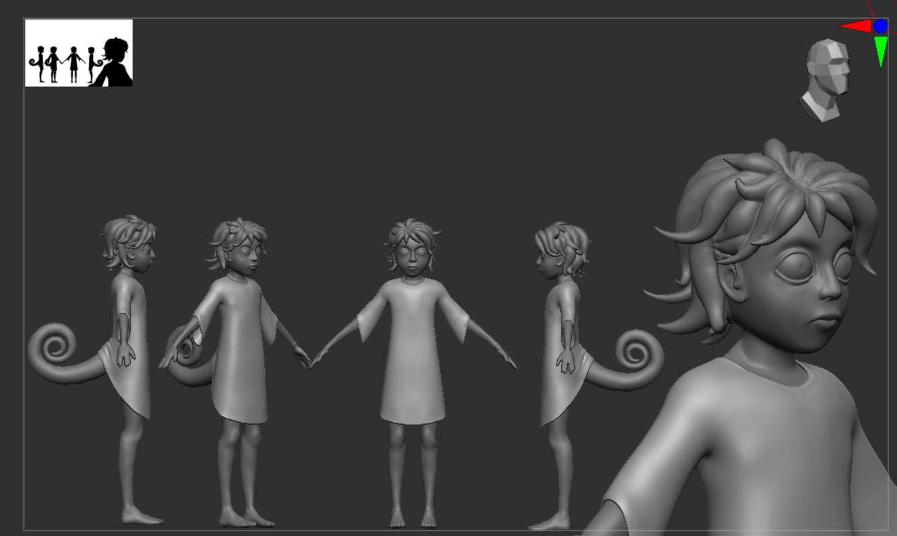
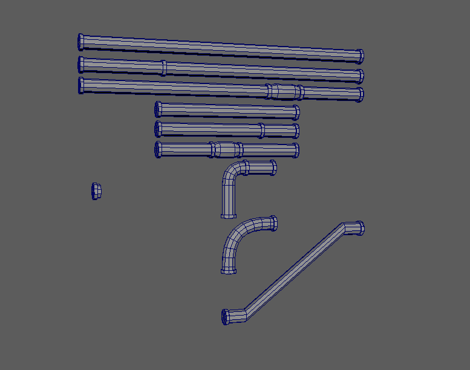
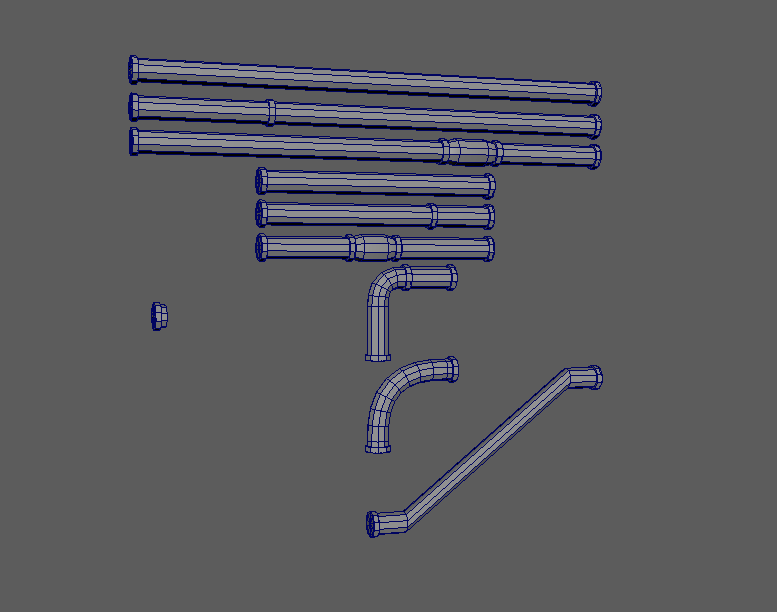

Wednesday, March 26th, 2025: Moving Day and New Subjects
Greetings CREEP interns and newcomers, welcome to the weekly update portion of this website. Here you can expect updates, interesting facts, and subject notes all on the ins and outs of CREEP HQ. As you may have heard in last week's memo. CREEP is moving buildings. Not much is known about this new location, but we have a general floor map, so we know what to expect.

Added to this, progress has been going well on the mutation process for Subject: RADIANT and Subject: ECHO. Though right now, final mutations are only sketch work predictions, we have high hopes, that soon we'll be able to see some truly monstrous forms.
Finally, as our subteams finalize in formation and starts to run more experiments, we have created a fully functional repository for our new files and test simulations. We even have an exciting simulation in development. A Subject that can change their very being to camouflage with it's environment. Though progress is only starting, we are excited for future experiments.
More News to Come Soon,
-CREEP Head Scientists
Monday, March 31st, 2025: New Subject Details
Hello CREEP interns, we have some exciting news from our new facility. First and foremost, our facility is looking bigger and better. As visible below, it may be a little barren, but our halls and rooms seem expansive. I'm sure that soon enough it will be filled with CREEP files and clutter.

Added to that, we have some interesting news on the various Subjects that you can find in our facility. Namely Subject Radiant (a human subject that was genetically spliced with a moth) and Subject Echo (a human subject that was genetically spliced with a bat).


As visible above, both subjects have started to develop into their new animalistic forms. Subject Radiant now has sagging wings made up of its flesh and Subject Echo has lost all vision in it's eyes. This is testable by it stumbling around in its room only latching onto when scientists walk by its chambers. The last Subject, Subject Change hasn't started to physically change much, but some strange abilities have been documented recently. Most notably, their eyes can now emit a light from them at will. We are unsure what this adaptation has to do with their genetic donor, the chameleon, but it does make us want to test certain other attributes. Luckily, it seems Subject Change hasn't lost any of their natural abilities or strength as they seem to be able to push around blocks with ease.
 

We're excited to show you what comes next. More News to Come Soon,
-CREEP Head Scientists
Tuesday, April 8th, 2025: Mutations!
Hello CREEP interns, it finally happened, we have exciting news about the mutations. Subject Radiant, Subject Echo, and Subject Change have all started to transform into their new forms.
 

After weeks of toiling in CREEP HQ, the mutations have developed. Subject Echo's Bat like ears allow them to hear a water drop from miles away. It is important to note, that this mutation had a negative side effect of limiting Subject Echo's visibility. We've done extensive simulations as visualized below to test their capabilities in a field test. It seems that the lack of sight has made Subject Echo largely erratic, whenever he hears the slightest noise, he charges at the sound with murderous intent.

Similarly, Subject Radiant has evolved to have the ability to sense and see even the faintest of light. However, it seems as a side effect, Subject Radiant becomes obsessed with the light trying to consume it's origin source. For the time being, Subject Radiant has been locked in a dark room until more simulations are completed.
Finally, Subject Change has started her process of evolution developing a tail and beady eyes. We've started to run our simulations for what we expect Subject Change to be able to do.

According to our simulations, we expect Subject Change to have the ability to blend into the background becoming nearly invisible to the naked eye. Added to that, through extensive tests we see that Subject Change will likely have a shift in personality, having an interest in collecting and interacting various objects. We're excited to see these changes fully in action on the real subject.
 


Finally, for all of the CREEP industrialists reading these posts, you'd be happy to know that CREEP HQ is getting state of the art doors, ventilation and boiler room technology. The CREEP plumbers have just brought in the pipes and the CREEP electricians started to set up the doors. I'm sure it'll be soon we'll see them fully in action.
-CREEP Head Scientists